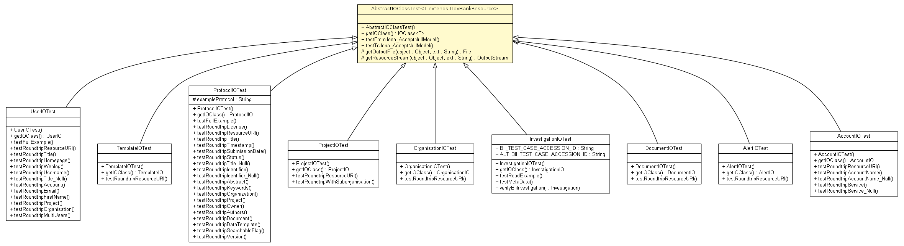

net.toxbank.client.io.rdf
Class AbstractIOClassTest<T extends net.toxbank.client.resource.IToxBankResource>

java.lang.Object
 net.toxbank.client.io.rdf.AbstractIOClassTest<T>
net.toxbank.client.io.rdf.AbstractIOClassTest<T>
- Direct Known Subclasses:
- AccountIOTest, AlertIOTest, DocumentIOTest, InvestigationIOTest, OrganisationIOTest, ProjectIOTest, ProtocolIOTest, TemplateIOTest, UserIOTest
public abstract class AbstractIOClassTest<T extends net.toxbank.client.resource.IToxBankResource>
- extends Object
| Methods inherited from class java.lang.Object |
clone, equals, finalize, getClass, hashCode, notify, notifyAll, toString, wait, wait, wait |
AbstractIOClassTest
public AbstractIOClassTest()
getIOClass
public net.toxbank.client.io.rdf.IOClass<T> getIOClass()
testFromJena_AcceptNullModel
public void testFromJena_AcceptNullModel()
testToJena_AcceptNullModel
public void testToJena_AcceptNullModel()
getOutputFile
protected File getOutputFile(Object object,
String ext)
getResourceStream
protected OutputStream getResourceStream(Object object,
String ext)
throws IOException
- Throws:
IOException
Copyright © 2012 ToxBank project. All Rights Reserved.